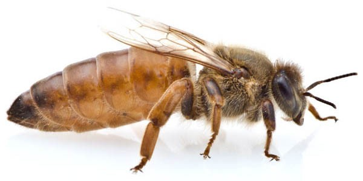
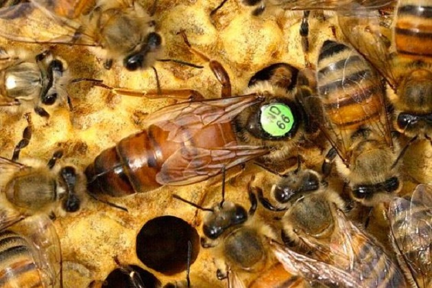
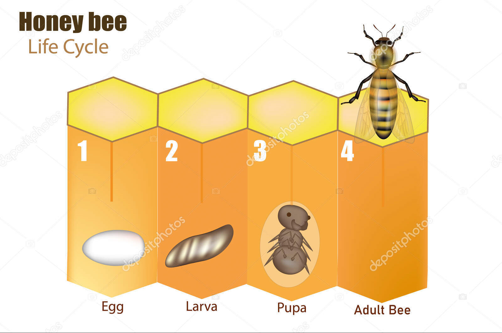
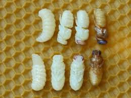
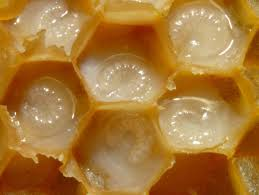
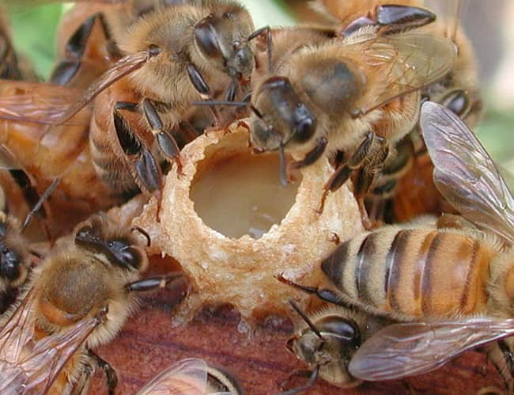
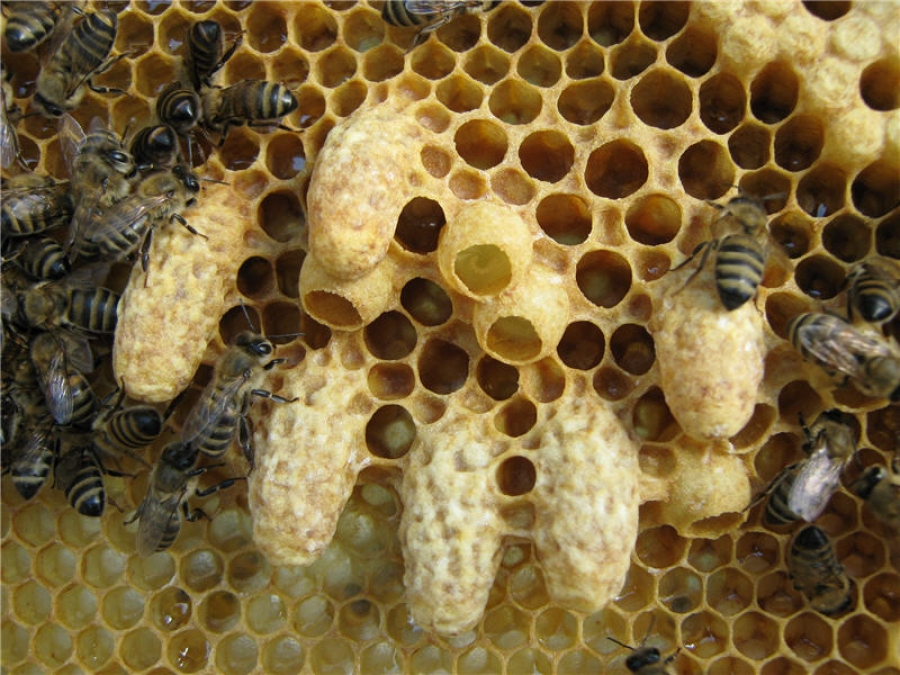

Бджола Бакфаст є однією з найпопулярніших порід бджіл у світі.
Ця порода була створена шляхом схрещування інших порід бджіл для отримання бажаних характеристик.
Бджола Бакфаст відома своєю працьовитістю, високою продуктивністю та дружелюбною поведінкою.
Цікаві факти про бджолу Бакфаст
Бакфаст бджоли мають великі корпуси, яскраво-помаранчеве забарвлення
та
волохате тіло.
Бджола Бакфаст вважається однією з кращих порід для виробництва меду через їх високу продуктивність та
вміння
працювати в умовах комерційного бджільництва.
Бджола Бакфаст є важливою складовою екосистеми, оскільки вони забезпечують опиляцію багатьох рослин, що
сприяє
розпліду рослин і збереженню біорізноманіття.
Характеристика бджоли Бакфаст:
-
Процвітання: Висока працьовитість та продуктивність
-
Забарвлення: Яскраво-помаранчеве
-
Тіло: Волохате, великі корпуси
-
Характер: Дружелюбна та миролюбна
-
Продуктивність: Висока швидкість збору нектару та пилку
-
Адаптивність: Добре пристосована до різних кліматичних умов
-
Використання: Ідеальна для виробництва меду та опилювання рослин
-
Значення: Важлива для збереження біорізноманіття та екосистем
Опис матки:
-
Розмір: Більші за інших бджіл в ульях, до 2 см довжиною.
-
Колір: Зазвичай темнішого кольору, наприклад, темно-коричнева або чорна.
-
Вага: Вага матки може сягати від 150 до 200 мг.
-
Фізичні особливості: Має довге тіло, великі очі та короткі крила.


Опис робочих бджіл:
-
Розмір: Робочі бджоли менші за маток, зазвичай близько 1 см у довжину.
-
Колір: Залежить від виду, але зазвичай жовтого або чорного кольору з пожовтілими смугами.
-
Вага: Вага робочих бджіл становить близько 80-100 мг.
-
Фізичні особливості: Вони мають волохате тіло, корисні для збирання пилку, та швидкі крила для
польоту.
Як з'являються бджілки?
Бджілки, як правило, з'являються у результаті процесу розвитку бджолиних личинок у вулику. Ось як цей процес
відбувається:
-
Яйцекладення: Матка відкладає яйця в стільники улья.
-
Личинка: Після того, як яйце вилуплюється, з'являється личинка.
-
Годування: Робочі бджоли годують личинок пилком та медом.
-
Загортання: Личинка укривається восковою кришкою у стільнику.
-
Перетворення в бджілку: Під восковою кришкою личинка перетворюється на бджілку.
-
Вибух зі стільника: Коли бджілка готова, вона вибухає зі стільника та приєднується до інших
робочих
бджіл у вулику.



Як з'являються матки бджілок?
Матки бджілок з'являються після спеціального процесу вирощування, який відбувається у вулику. Ось як цей
процес
відбувається:
-
Яйцекладення: Робочі бджоли створюють гніздо(Маточник) для вирощування нової матки та відкладують
яйце для
цього.
-
Спеціальний годувальний режим: Яйце, яке відклали для вирощування матки, годують спеціальною
сумішшю
гельмінту та пилку, яка допомагає виростити матку з великим потенціалом.
-
Особливі умови: Для вирощування матки створюються спеціальні умови в ульї, які сприяють розвитку
яйця в
матку.
-
Годування та догляд: Робочі бджоли продовжують годувати та доглядати личинку, яка знаходиться в
спеціальній
стільнику.
-
Перетворення в матку: Після відповідного періоду розвитку личинки перетворюється в матку, яка
готова до
виходу зі стільника.
.
-
Вибух зі стільника: Після того, як нова матка готова, вона вибухає і приймає свою роль у вулику


Штучний вивід маток
Штучний вивід маток - це процес, за допомогою якого вирощують нових маток для подальшого використання у
бджолярстві.
Цей процес включає в себе відібрання яйцекладки від материнських бджіл, їх відкладання в штучних умовах,
опліднення та вирощування молодих маток.
Штучний вивід маток допомагає бджолярам контролювати генетику своїх бджіл та покращувати продуктивність
бджільництва.
-
Відібрання личинки матки: Відбирання рамки з личинками звичайних бджіл.
-
Перенос личинок: Личинки звичайних бджіл переносять у спеціальний штучний "маточник" для розвитку матки.
-
Перенос матки: Маленьку личинку майбутньої матки переносять у так називаємий стартер.
-
Годування та догляд: У стартері личинку бджоли не рахують за бджолу із за штучного маточника і кормлять
та доглядають як матку.
-
Загортання: Личинка укривається восковою кришкою у стільнику.
-
Перетворення в матку: Після відповідного періоду розвитку личинки перетворюється в матку, яка готова до
виходу зі стільника.
-
Накривання маточників: Коли матки вже готові до вибуху, їх накривають захисними клітинками "бігудями".
-
Вибух зі стільнику: Після того, як нова матка готова, вона вибухає, після чого її мітять спеціальним
маркером.